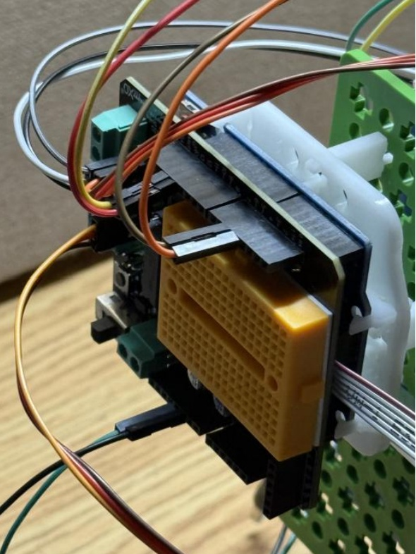
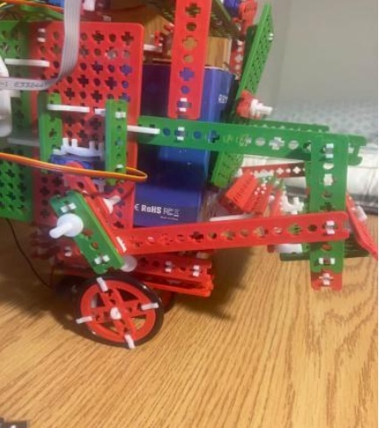

Project Overview

The Robotic Candy Dispenser was a team engineering project designed to automatically detect visual inputs and dispense different candy selections.
The system combined mechanical design, sensors, computer vision, Arduino programming, motors, and servo-driven mechanisms into one integrated robotic platform.
Computer Vision & Control


A PixyCam camera was used to identify objects and colors. The Arduino control system interpreted the detected signatures and triggered the appropriate servo movements.
Different detected colors corresponded to different candy chutes, allowing the system to control which candy was released.
Mechanical System
The robot used several interconnected mechanical systems, including three candy chutes, two four-bar linkages, servo-controlled dispensing doors, and a motor-driven wheel system.
- Three inclined chutes stored different candy selections
- A servo-controlled door selected which chute was opened
- Dual four-bar linkages moved the presentation platform
- DC motors powered the robot's wheel system
Programming & Embedded Control
The Arduino program initialized the PixyCam and multiple servo motors, read detected visual signatures, selected the appropriate chute, and coordinated the linkage system used to present the candy.
- Initialized and read visual signatures from the PixyCam
- Controlled multiple servo motors for chute selection and linkage movement
- Used conditional control logic to respond to recognized colors and objects
- Coordinated sensing and mechanical actuation into one automated sequence
Project Demo
The video below demonstrates the completed robot in operation.
What I Learned
This project gave me experience integrating software and physical hardware into one complete system. I worked with sensors, Arduino programming, servo control, mechanical mechanisms, testing, and troubleshooting.
It also helped develop my interest in the intersection of computer science, robotics, and intelligent physical systems.